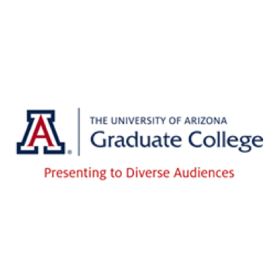

College-Level Education
I've been a teaching assistant (TA) or tutor for subjects ranging from physics to statistics to economics. In Spring 2019, I am the TA for ASTR 201: Cosmology, a general-education astronomy course, for Prof. Peter Behroozi. This role is part of a course reform project to incorporate active learning and inclusive teaching techniques into courses. With Prof. Behroozi and Prof. Ed Prather, a professor who specializes in astronomy education, I am conducting education research the course. In addition to teaching cutting-edge astronomy content, the course goals include (1) that science is something everyone can do and participate in, (2) that science is valuable towards society and everyday life, and (3) that science does not have to be at odds with personal values and beliefs. My research will assess how our newly designed curriculum affects students' views on science in relation to society, and the results will improve future iterations of the course.
I have also participated in the Professional Development Program (PDP) from the UCSC Institute for Scientist & Engineer Educators (ISEE), and I received a Certificate in Inclusive Inquiry STEM Education. I worked in a team with 3 other participants to design an inquiry on Bayesian statistical analysis. We had our students conduct investigations on exoplanet research, globular clusters, and identifying stars - all of which were based on real astronomy research projects. We taught this activity at the WEST program for students transferring to UCSC from community colleges. A main theme in the PDP is equity and inclusion through both design and facilitation. We incorporated these principles by providing multiple pathways to success in our activities and giving learners opportunities to see themselves as people engaged in authentic STEM practices.

Furthermore, I've worked with the Warrior Scholar Project, an academic "bootcamp" for veterans returning to school, during their STEM week at the University of Arizona. In summer 2018, I created and led a week-long lab activity about data analysis and image manipulation (e.g., false-color images, making "images" out of data, etc.). In summer 2017, I co-led a week-long research lab about exoplanets (detectability, habitability, and orbit stability).
K-12 Education
I am currently an instructor for the University of Arizona Sky School. I have been a part of their City program where we work with local 3rd & 4th grade students. Each instructor facilitates a group of 6-8 students through a 3-day scientific inquiqry activity motivated by the students' own observations and questions about their environment (e.g., what kinds of habitats insects prefer or what causes different colors of plants). Students collect data to determine which hypothesis of their is supported, and at the end of the inquiry process, they present their results to the rest of their class.
I have particpated in a few other K-12 programs as well:
- I've volunteered with the National Optical Astronomy Observatory (NOAO) Teen Astronomy Cafe Series to introduce high school students to astronomy research through hands-on activities and conversations over lunch.
- I also volunteered with Project ASTRO through NOAO, which connected me with a local 6th grade teacher, and I led astronomy activities with her class on our solar system and scales of the galaxy & universe.
- Finally, I worked as an independent contractor with the Sonoran Glass School, a local nonprofit dedicated to arts education. I provided additional instructional assistance when they brought middle school students into the School to learn about glass beadmaking.
Public Outreach
I have done public outreach by giving talks about my research at different venues, including during Family Weekend at the Unviersity of Arizona (October 2017) and at the Sonora Astronomical Society (March 2018).
Currently, as part of my service with the Associate Graduate Council for the College of Science (AGCCS), I am organizing two "Science Speakeasy" events. AGCCS surveyed College of Science gradaute students to see what types of events they wanted to see, and the vast majority wanted to see more science outreach events. The goal of our Science Speakeasies is to create an "informal science cafe" - instead of giving the audience a science talk, scientists will engage in dialog (e.g., one-on-one conversations) with members of the public. I partnered with the March for Science of Southern Arizona, a local nonprofit; they run a weekly science trivia series, and we'll present our Science Speakeasy at two of those events (March 18 and April 22, 2019). I have coordinated scientist registration and will be emceeing both events.
Public Policy
Between my B.A. in Astronomy/Physics (Univeristy of Virginia 2013) and starting my Ph.D., I earned a Master of Public Policy (MPP) degree from the Frank Batten School of Leadership & Public Policy at the University of Virginia. Through the program, I learned and practiced many general policy skills, including writing breifs, memos, and other articles as well as analyzing the effectiveness of policies. I applied these lessons in my internship with the American Association of Physics Teachers (AAPT). For my MPP thesis, I wrote a policy analysis with AAPT on increasing gender diversity in physics, and I presented the results at the 5th International Conference on Women in Physics in Waterloo, Canada.
Science Communication Training
In addition to education and policy experiences, I have attended trainings to enhance my science communication skills:
- I'm a AAS Astronomy Ambassador (Nov. 2014 workshop),
- I participated in an Alan Alda Center Science Communication Workshop which used improvisation exercises to focus on how to engage audiences including the general public, media, and funding sources.
- In April 2017, I earned a digital badge through the University of Arizona Graduate College on Presenting to Diverse Audiences.
